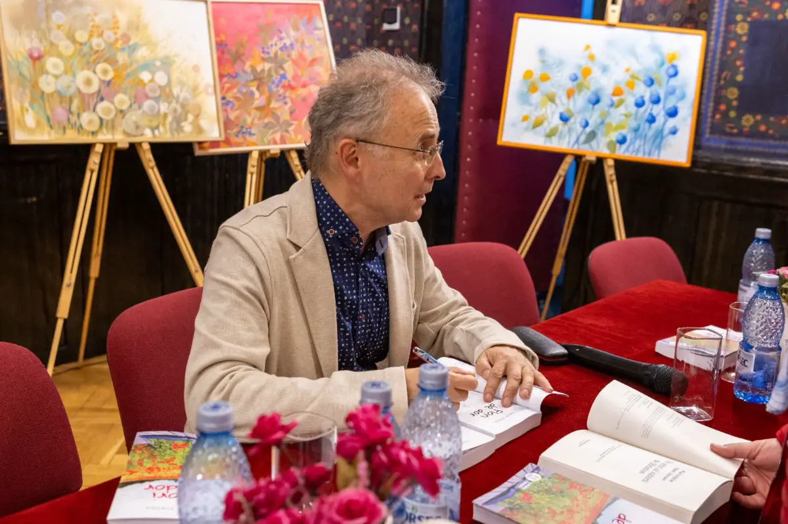

Trepte spre cer
Roman, Editura Adenium
ComandăBine ați venit pe site-ul oficial
Scriitor și organizator de evenimente culturale. Scrie romane, eseuri, poezie și teatru și aduce oamenii împreună la lansări de carte, simpozioane și conferințe duhovnicești.


Carte recomandată
Pagini despre Sfântul Munte Athos, „Grădina Maicii Domnului”, scrise după peste douăzeci de ani de pelerinaje și de lucru la biblioteca Schitului Prodromu. Apărută la editura Lebăda Neagră.
Toate cărțile se pot comanda online, direct de la editură.
Roman, Editura Adenium
ComandăLebăda Neagră
Comandă
Lebăda Neagră
ComandăEdiții bilingve, în 6 limbi
Comandă
Ediție prefațată și îngrijită
Comandă
Ediție prefațată și îngrijită
Comandă
Născut pe la mijlocul anilor ’60, „într-o zodie pe cale de dispariție, a celor care mai cred în educație și cultură”, Călin Pintea scrie poeme, eseuri, beletristică și teatru.
De peste douăzeci de ani este pelerin la Sfântul Munte Athos, unde a contribuit la rânduirea bibliotecii Schitului Prodromu. Biroul lui adăpostește vreo 8.500 de volume. Iubește muntele, muzeele, pe Nichita, pe Noica și, mai presus de toți, pe Caravaggio.
Organizează lansări de carte, pentru sine și pentru alți autori, simpozioane și conferințe duhovnicești, în România, în Spania și în Irlanda.
Citește interviurileLansări de carte, simpozioane și conferințe.





„Pagini de poezie în proză de o frumusețe tulburătoare.”
Un email scurt, doar când apare ceva nou.
Pentru invitații la lansări, simpozioane, conferințe sau interviuri.
Email: [adresa de email]
Telefon: [număr]
Facebook: [link]